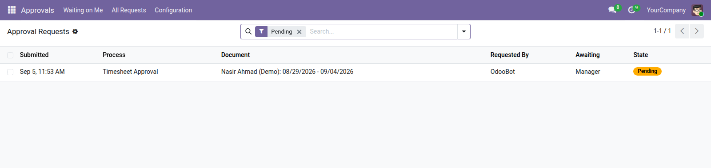

<section style="padding:32px 0;font-family:Roboto,Helvetica,Arial,sans-serif;color:#2b3a34;">
  <div style="max-width:900px;margin:0 auto;padding:0 24px;">

    <p style="font-size:12px;letter-spacing:.14em;text-transform:uppercase;color:#0b6b57;font-weight:600;margin:0 0 10px;">Productivity</p>
    <h1 style="font-size:40px;line-height:1.1;margin:0 0 14px;font-weight:700;">Approval Workflows</h1>
    <p style="font-size:19px;line-height:1.55;color:#4c5a55;max-width:640px;margin:0 0 28px;">Put a configurable, multi-step approval chain in front of any document you already have — purchase requests, leave, contracts, expenses, or a model of your own.</p>

    <div style="background:#f6f7f5;border-left:3px solid #0b6b57;padding:18px 22px;margin:0 0 32px;font-size:16px;line-height:1.6;"><strong>Enterprise Approvals models a request. This models an approval.</strong> Odoo's app gives you a standalone record somebody raises. It does not put a chain in front of a document that already exists, which is what an organisation actually needs.</div>

    <div style="margin:0 0 34px;">
      
      <div style="font-size:13px;color:#75837d;padding-top:8px;">The approval queue: what is waiting, and on whom</div>
    </div>

    <h2 style="font-size:24px;margin:0 0 16px;font-weight:600;">Who approves a step</h2>
    <table style="width:100%;border-collapse:collapse;margin:0 0 30px;font-size:15px;">
      <thead><tr style="background:#edf0ec;">
        <th style="text-align:left;padding:10px 14px;border-bottom:1px solid #dce1db;">Kind</th>
        <th style="text-align:left;padding:10px 14px;border-bottom:1px solid #dce1db;">You configure</th>
        <th style="text-align:left;padding:10px 14px;border-bottom:1px solid #dce1db;">Good for</th>
      </tr></thead>
      <tbody>
        <tr><td style="padding:9px 14px;border-bottom:1px solid #eef1ed;">A specific person</td><td style="padding:9px 14px;border-bottom:1px solid #eef1ed;">the user</td><td style="padding:9px 14px;border-bottom:1px solid #eef1ed;">a named budget holder</td></tr>
        <tr><td style="padding:9px 14px;border-bottom:1px solid #eef1ed;">Anyone in a group</td><td style="padding:9px 14px;border-bottom:1px solid #eef1ed;">the group — first to act decides</td><td style="padding:9px 14px;border-bottom:1px solid #eef1ed;">a finance team where any of three can sign</td></tr>
        <tr><td style="padding:9px 14px;border-bottom:1px solid #eef1ed;">Whoever the document says</td><td style="padding:9px 14px;border-bottom:1px solid #eef1ed;">a path, e.g. <code>employee_id.parent_id.user_id</code></td><td style="padding:9px 14px;border-bottom:1px solid #eef1ed;">the requester's own manager, found from the document</td></tr>
      </tbody>
    </table>

    <h2 style="font-size:24px;margin:0 0 16px;font-weight:600;">Conditions, so one process covers the whole range</h2>
    <p style="font-size:16px;line-height:1.65;color:#4c5a55;margin:0 0 14px;">A step can carry a condition and is skipped when it does not hold. One process can therefore say that anything over 50,000 also needs the director — without a second process to maintain and keep in step with the first.</p>
    <p style="font-size:16px;line-height:1.65;color:#4c5a55;margin:0 0 30px;">Approvers found from the document mean the process does not need rewriting when people change roles. Promote someone, and the chain follows.</p>

    <h2 style="font-size:24px;margin:0 0 16px;font-weight:600;">For the people using it</h2>
    <ul style="font-size:16px;line-height:1.7;color:#4c5a55;margin:0 0 30px;padding-left:20px;">
      <li><strong>Waiting on Me</strong> — one queue, and the documents also arrive as ordinary Odoo activities</li>
      <li><strong>A reason to reject</strong> — required, and the requester reads it — a rejection with no reason is a conversation somebody has to have twice</li>
      <li><strong>Comments on approval too</strong> — optional per process, for the chains where the approver is expected to say something</li>
      <li><strong>Your own wording on the button</strong> — Verify, Endorse, Certify — whatever the organisation calls it</li>
    </ul>

    <h2 style="font-size:24px;margin:0 0 16px;font-weight:600;">For the developer</h2>
    <p style="font-size:16px;line-height:1.65;color:#4c5a55;margin:0 0 30px;">Inherit one mixin and the model gains the whole submit-approve-reject cycle. The steps themselves are configured by the customer at run time, not written in code — which is the point: the same module serves an office that needs one signature and one that needs five.</p>

    <div style="border-top:1px solid #dce1db;padding-top:20px;font-size:14px;color:#75837d;">Odoo 19.0 Community · depends on <code>base</code> and <code>mail</code> only.</div>

  </div>
</section>
